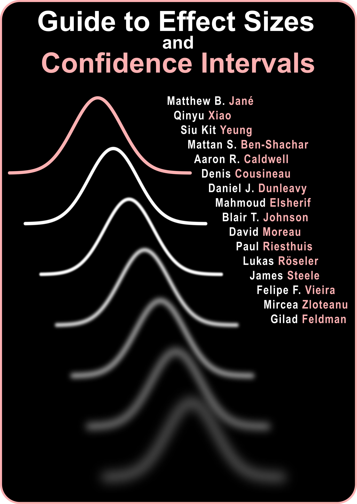

Guide to Effect Sizes and Confidence Intervals
Qinyu Xiao ![]()
Siu Kit Yeung
Mattan S. Ben-Shachar
Aaron R. Caldwell
Denis Cousineau
Daniel J. Dunleavy
Mahmoud Elsherif
David Moreau
Paul Riesthuis
Lukas Röseler
James Steele
Felipe F. Vieira
Mircea Zloteanu
Gilad Feldman
Welcome

This effect sizes and confidence intervals collaborative guide aims to provide academics, students and researchers with hands-on, step-by-step instructions for calculating effect sizes and confidence intervals for common statistical tests used in the behavioral, cognitive and social sciences, particularly when original data are not available and when reported information is incomplete. It also introduces general background information on effect sizes and confidence intervals, as well as useful R packages for their calculation. Many of the methods and procedures described in this Guide are based on R or R-based Shiny Apps developed by the science community. We were motivated to focus on R as we aim to maximize the reproducibility of our research outcomes and encourage the most reproducible study planning and data analysis workflow, though we also document other methods whenever possible for the reference of our readers. We regularly update this open educational resource, as packages are updated frequently and new packages are developed from time to time in this rapidly changing Open Scholarship era.
Introduction
Effect sizes and confidence intervals are critical metrics for interpreting results and quantifying the magnitude of findings in scientific research. However, calculating these values can be challenging, particularly when original data are unavailable or results are incompletely reported in prior publications. To address this need, our collaborative guide provides hands-on instructions for calculating effect sizes and confidence intervals for common statistical tests in the behavioral, cognitive, and social sciences. Our guide includes background information on these concepts as well as recommendations for useful R packages that can automate many of these computations. R is emphasized due to its capabilities for reproducible analyses; however, we also cover alternative methods for those without expertise in R. This guide is intended to be an evolving open educational resource, updated as new methods and packages become available in this fast-changing era of open scholarship. By compiling these applied instructions, our goal is to enable students and researchers to easily obtain these metrics, facilitating robust and transparent quantification of results, as well as cumulative scientific progress.
Guidelines for contribution
All are encouraged to contribute to this Guide. Please note that this Guide is in continuous development such that it will remain a work in progress for an indefinite period of time. This is intended because we hope the Guide to always reflect the state of the art on the topics of effect sizes and confidence intervals. To contribute, there are now two options:
- You can suggest edits and make comments in the following google doc: mgto.org/effectsizeguide.
- You can suggest edits directly in the online book using Hypothes.is. To do this you will need to create a free account on hypothes.is (hypothes.is/signup; this will take about a minute). Then when you navigate to the online book, you can open the panel on the top right of the screen. There you can suggest edits and create comments with code and latex!
Notes
Please use the headings and style as set forth in this document. You can use keyboard shortcuts such as Ctrl + Alt + 1/2/3. The normal text is in Times New Roman font, font size 11. The codes are formatted using the Code Blocks add-on of Google Docs, github theme, font size 8.
Use the Suggesting mode rather than the Editing mode. Suggesting is now the default mode for this document. Therefore, please do not hesitate to correct mistakes or modify the contents directly.
Add a comment to the document if you find anything missing or improper, or if you feel that things are better organized in a different way. We appreciate your suggestions. If you have any questions, please also add a comment. We will reply and seek to clarify in the document body.
Please make proper citations (in APA 7th format) and provide relevant links when you refer to any source that is not your own.
Cite this book
This will change soon, but for now you can cite this book with the following citation:
APA:
Jané, M. B., Xiao, Q., Yeung, S. K., Ben-Shachar, M. S., Caldwell, A. R., Cousineau, D., Dunleavy, D. J., Elsherif, M., Johnson, B. T., Moreau, D., Riesthuis, P., Röseler, L., Steele, J., Vieira, F. F., Zloteanu, M., & Feldman, G. (2024). Guide to effect sizes and confidence intervals. https://matthewbjane.quarto.pub/effect-size-and-confidence-intervals-guide/. Pre
BibTeX:
@misc{EffectSizeGuide,
title={Guide to effect sizes and confidence intervals},
author={Jané, Matthew B and Xiao, Qinyu and Yeung, Siu Kit and Ben-Shachar, Mattan S and Caldwell, Aaron R and Cousineau, Denis and Dunleavy, Daniel J and Elsherif, Mahmoud and Johnson, Blair T and Moreau, David and Riesthuis, Paul and Röseler, Lukas and Steele, James and Vieira, Felipe F. and Zloteanu, Mircea and Feldman, Gilad},
year={2024},
url={https://matthewbjane.quarto.pub/effect-size-and-confidence-intervals-guide/}
}